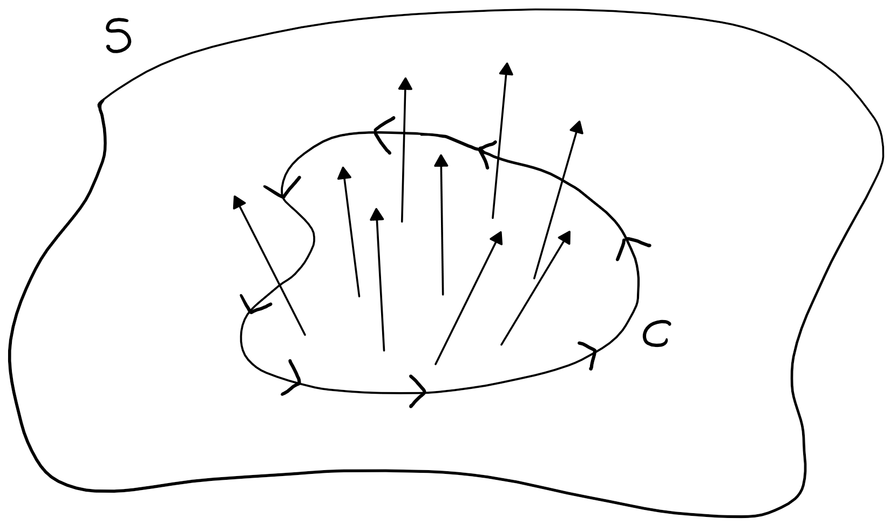

Jonathan Crofts
Nottingham Trent University
The area of the smooth surface $S$ parametrised by
\[ \quad\mathbf{r}(u,v) = f(u,v)\mathbf{i}+g(u,v)\mathbf{j}+h(u,v)\mathbf{k}, \quad u\in[a, b], v\in[c,d]\quad \]is
\[ A = \iint_S\,\mathrm{d}\sigma = \int_a^b\int_c^d |\mathbf{r}_u\times\mathbf{r}_v|\,\mathrm{d}u\mathrm{d}v \]Here
\[ \color{red}{\boxed{\color{white}{ \mathrm{d}\sigma = |\mathbf{r}_u\times\mathbf{r}_v|\,\mathrm{d}u\mathrm{d}v }}} \]is called the surface element
See the online notes for a derivation of this result
Find the surface area of a sphere of radius $2$
We use spherical coordinates to parametrise the sphere as follows
\[ \mathbf{r}(\theta, \phi) = \left(2\cos\theta\sin\phi\right)\mathbf{i}+\left(2\sin\theta\sin\phi\right)\mathbf{j}+\left(2\cos\phi\right)\mathbf{k} \]To compute the surface element we need the derivatives wrt $\theta$ and $\phi$:
\[ \begin{align*} \mathbf{r}_\theta &= \left(-2\sin\theta\sin\phi\right)\mathbf{i}+\left(2\cos\theta\sin\phi\right)\mathbf{j}+\left(0\right)\mathbf{k}\\ \mathbf{r}_\phi &=\left(2\cos\theta\cos\phi\right)\mathbf{i}+\left(2\sin\theta\cos\phi\right)\mathbf{j}+\left(-2\sin\phi\right)\mathbf{k} \end{align*} \]Thus
\[ \color{red}{\boxed{\color{white}{ \mathrm{d}\sigma = \begin{vmatrix}\mathbf{i}&\mathbf{j}&\mathbf{k}\\ -2\sin\theta\sin\phi&2\cos\theta\sin\phi&0\\ 2\cos\theta\cos\phi&2\sin\theta\cos\phi&-2\sin\phi\end{vmatrix}\mathrm{d}u\mathrm{d}v }}} \]Computing the cross product:
\[ \begin{vmatrix}\mathbf{i}&\mathbf{j}&\mathbf{k}\\ -2\sin\theta\sin\phi&2\cos\theta\sin\phi&0\\ 2\cos\theta\cos\phi&2\sin\theta\cos\phi&-2\sin\phi\end{vmatrix} = -4(\cos\theta\sin^2\phi, \sin\theta\sin^2\phi, \sin\phi\cos\phi)\\ \]So that
\[ \begin{align*} |\mathbf{r}_\theta\times\mathbf{r}_\phi|^2 &= 16\left(\cos^2\theta\sin^4\phi+\sin^2\theta\sin^4\phi+\sin^2\phi\cos^2\phi\right)\\ &= 16\left(\sin^4\phi+\sin^2\phi\cos^2\phi\right)\\ &= 16\sin^2\phi \implies |\mathbf{r}_\theta\times\mathbf{r}_\phi| = 4\sin\phi \end{align*} \]And
\[ \mathrm{d}\sigma = 4\sin\phi\,\mathrm{d}u\mathrm{d}v \]The surface area is given by
\[ \begin{align*} \iint_S \,\mathrm{d}\sigma &= \int_0^{2\pi}\int_0^\pi 4\sin\phi\,\mathrm{d}\phi\mathrm{d}\theta\\ &=\int_0^{2\pi}\bigg[-4\cos\phi\bigg]_0^\pi\,\mathrm{d}\theta = \int_0^{2\pi}8\,\mathrm{d}\theta = \color{red}{\boxed{\color{white}{16\pi}}} \quad\text{(as expected ...)} \end{align*} \]Analogous to line integrals, which integrate a function over a curve, we can define a surface integral to integrate a function over a two-dimensional surface.
If $S$ is a smooth surface defined by the parametrisation
\[ \mathbf{r}(u,v) = f(u,v)\mathbf{i}+g(u,v)\mathbf{j}+h(u,v)\mathbf{k}, \quad u\in[a, b], v\in[c,d] \]and $G(x,y,z)$ is a continuous function defined on $S$, then the integral of $G$ over $S$ is
\[ \iint_SG(x,y,z)\,\mathrm{}d \sigma= \int_a^b\int_c^d G(f(u,v),g(u,v),h(u,v))|\mathbf{r}_u\times\mathbf{r}_v|\,\mathrm{d}u\mathrm{d}v \]Integrate $G(x,y,z)=x^2$ over the cone $z=\sqrt{x^2+y^2}$, $0\leq z\leq 1$.
To start let us compute the surface element of the cone
We can take as a parametrisation
\[ \mathbf{r}(u,v) = (u, v, \sqrt{u^2+v^2}) \]so that
\[ \mathbf{r}_u\times\mathbf{r}_v = \begin{vmatrix}\mathbf{i}&\mathbf{j}&\mathbf{k}\\ 1&0&u/\sqrt{u^2+v^2}\\0&1&v/\sqrt{u^2+v^2}\end{vmatrix} = \frac{u}{\sqrt{u^2+v^2}}\mathbf{i}+\frac{v}{\sqrt{u^2+v^2}}\mathbf{j}+\mathbf{k} \]Thus
\[ |\mathbf{r}_u\times\mathbf{r}_v| = \sqrt{\frac{u^2}{u^2+v^2}+\frac{v^2}{u^2+v^2}+1} = \sqrt{2} \implies \color{red}{\boxed{\color{white}{\mathrm{d}\sigma = \sqrt{2}\mathrm{d}u\mathrm{d}v}}} \]We thus have the following integral to solve
\[ \iint_S x^2\,\mathrm{d}\sigma = \iint_\mathcal{R} u^2\sqrt{2}\,\mathrm{d}u\mathrm{d}v, \]where $\mathcal{R}$ is the unit circle in the $uv$-plane
We can further simplify the problem by moving to polar coordinates \[ \begin{align*} \iint_\mathcal{R} u^2\sqrt{2}\,\mathrm{d}u\mathrm{d}v&= \sqrt{2}\int_0^{2\pi}\int_0^1 r^3\cos^2\theta\,\mathrm{d}r\mathrm{d}\theta\\ &=\sqrt{2}\int_0^{2\pi}\left[\frac{r^4}{4}\cos^2\theta\right]_0^1\,\mathrm{d}\theta = \sqrt{2}\int_0^{2\pi}\frac{1}{4}\cos^2\theta\,\mathrm{d}\theta \end{align*} \]Using the identity $\displaystyle \cos^2\theta = (1+\cos{2\theta})/2$ gives
\[ \sqrt{2}\int_0^{2\pi}\frac{1}{4}\cos^2\theta\,\mathrm{d}\theta = \frac{\sqrt{2}}{8}\bigg[\theta+\frac{1}{2}\sin{2\theta}\bigg]_0^{2\pi} = \color{red}{\boxed{\color{white}{\frac{\pi\sqrt{2}}{4}}}} \]We call a smooth surface $S$ orientable or two-sided if it is possible to define a field $\mathbf{n}$ of unit normal vectors on $S$ that varies continuously with position
If a curve $C$ lies on an orientable surface $S$ then we say that the curve $C$ is positively oriented if a right handed screw driver would turn in the direction of the normal field when turned in the direction of the path traversal
The flux of a vector field is an intuitive measure of how much of that vector field flows through a given surface over a period of time.
In mathematical terms, flux is calculated as the surface integral of the component of the vector field that is normal (perpendicular) to the surface at every point.
The Flux of a three-dimensional vector field $\mathbf{F}$ across an oriented surface $S$ in the direction of $\mathbf{n}$ is given by the formula
\[ \mathrm{Flux} = \iint_{S}\mathbf{F}\cdot\mathbf{n}\,\mathrm{d}\sigma \]Find the flux of $\mathbf{F}=(yz, x, -z^2)$ through the parabolic cylinder $y=x^2$, $x\in[0, 1]$, $z\in[0, 4]$.
On the surface we have the parametrisation
\[ \mathbf{r}(u,v) = (u, u^2, v),\quad u\in[0, 1], v\in[0, 4] \]The cross product of the tangent vectors is
\[ \mathbf{r}_u\times\mathbf{r}_v = \begin{vmatrix}\mathbf{i}&\mathbf{j}&\mathbf{k}\\ 1&2u&0\\0&0&1\end{vmatrix} = (2u, -1, 0) \]The unit outward normal is
\[ \mathbf{n} = \frac{\mathbf{r}_u\times\mathbf{r}_v}{|\mathbf{r}_u\times\mathbf{r}_v|} = \frac{2u\mathbf{i}-\mathbf{j}}{\sqrt{4u^2+1}} \]On the surface $y=x^2$ the vector field is
\[ \begin{align*} \mathbf{F} &= (yz, x, -z^2)\\ &= (u^2v, u, -v^2) \end{align*} \]Thus
\[ \begin{align*} \mathbf{F}\cdot\mathbf{n}&= \frac{1}{\sqrt{4u^2+1}}\left((u^2v)(2u)+(u)(-1)+(-v^2)(0)\right)\\\\ &= \frac{2u^3v-u}{\sqrt{4u^2+1}} \end{align*} \]The flux of $\mathbf{F}$ through the surface is
\[ \begin{align*} \iint_S\mathbf{F}\cdot\mathbf{n}\,\mathrm{d}\sigma &= \int_0^4\int_0^1\frac{2u^3v-u}{\sqrt{4u^2+1}}|\mathbf{r}_u\times\mathbf{r}|\,\mathrm{d}u\mathrm{d}v\\ &=\int_0^4\int_0^1\frac{2u^3v-u}{\sqrt{4u^2+1}}\sqrt{4u^2+1}\,\mathrm{d}u\mathrm{d}v\\ &=\int_0^4\int_0^1\left(2u^3v-u\right)\,\mathrm{d}u\mathrm{d}v = \int_0^4\left[\frac{1}{2}u^4v-\frac{1}{2}u^2\right]_0^1\,\mathrm{d}v\\ &=\int_0^4 \frac{1}{2}\left(v-1\right)\,\mathrm{d}v =\bigg[\frac{1}{4}\left(z-1\right)^2\bigg]_0^4\\ &= \frac{1}{4}(9)-\frac{1}{4}(1) = \color{red}{\boxed{\color{white}{2}}} \end{align*} \]